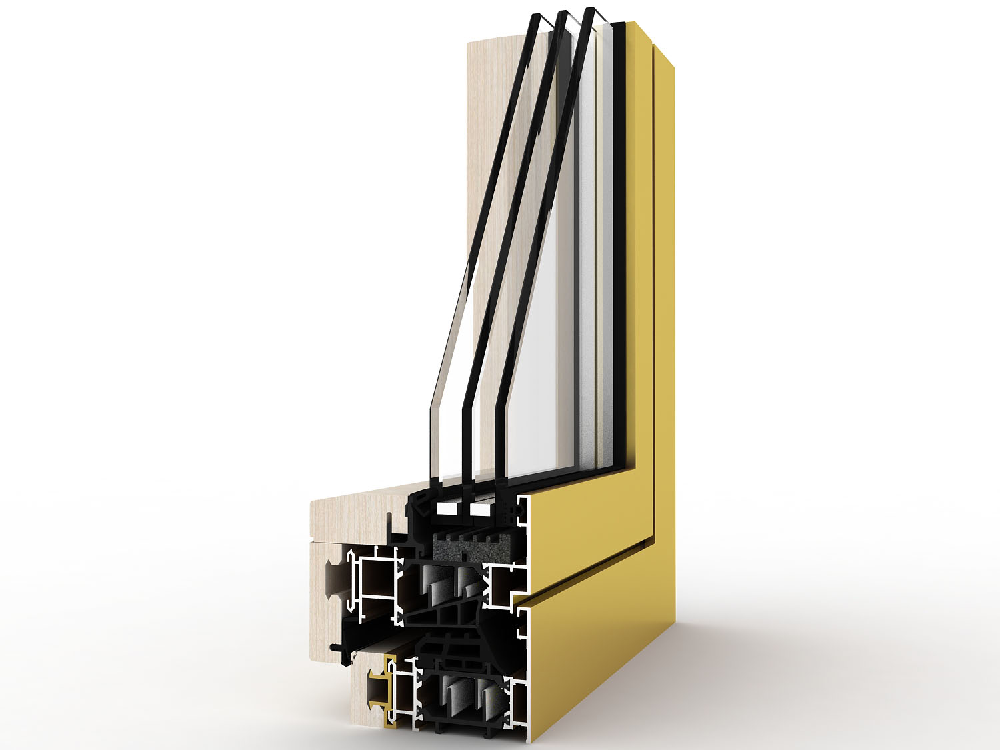
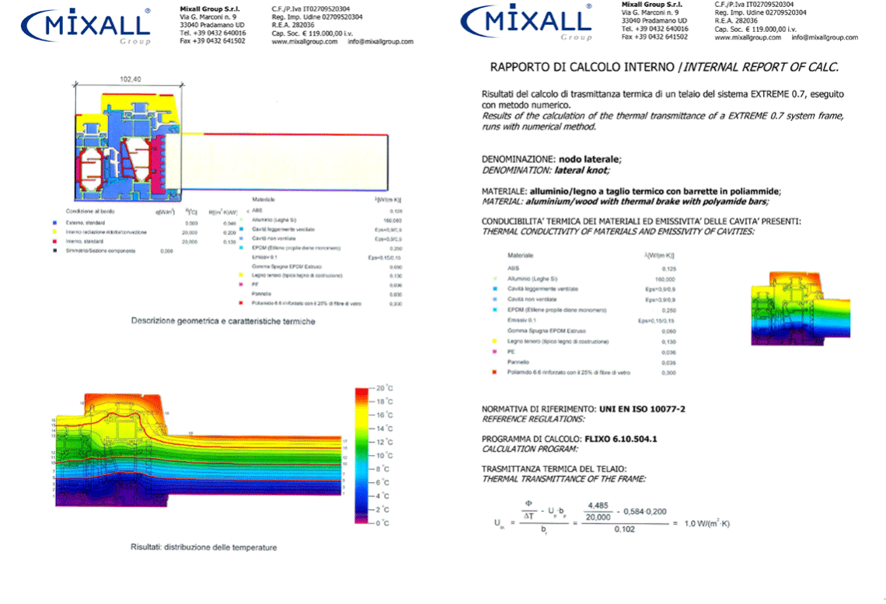
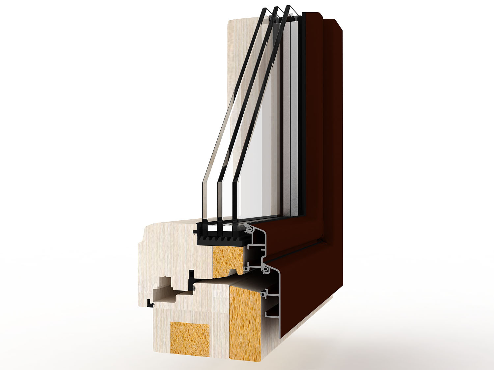
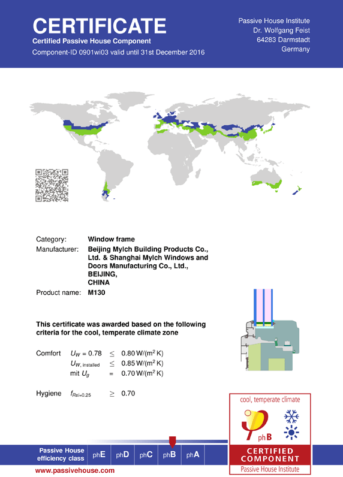
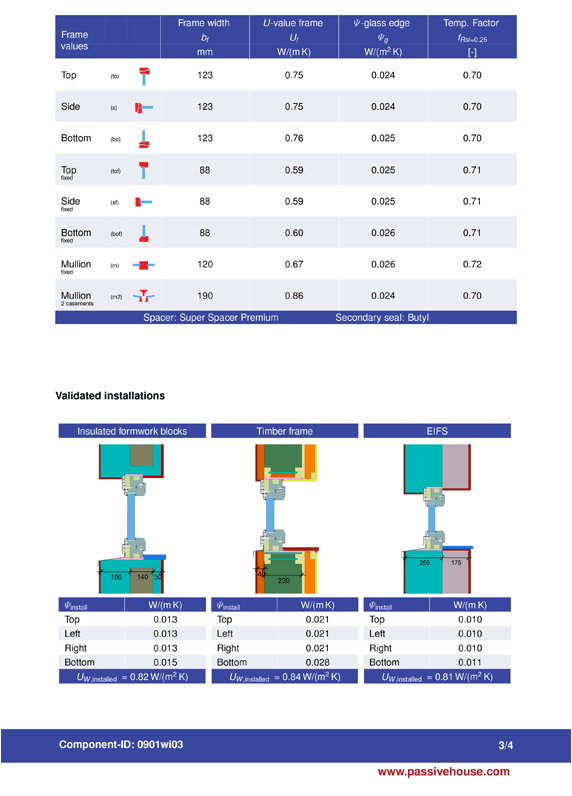
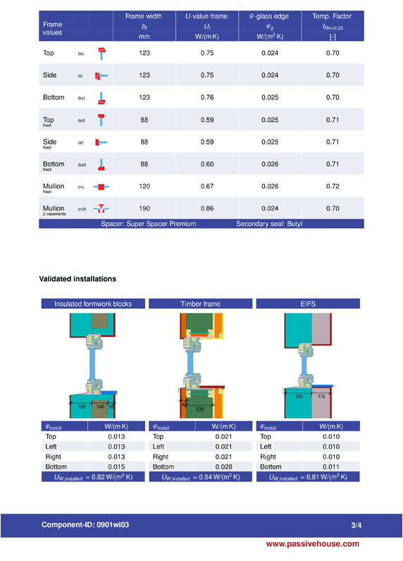

{% extends "layout.html" %}
{% block css %}
{% endblock %}
{% block content %}

EX105木包铝门窗
开启精致“被动”生活
国际上对被动式门窗的性能要求极高，包括节能性能、气密性能、水密性能，另外要求其热传系数能够达到0.8W/(㎡•K)，美驰EX105木包铝门窗是国内为数不多的，通过意大利被动窗国际认证的木包铝门窗，各项性能指标均能够达到被动房要求。一扇被动窗不仅让你的居住品质得到提升，还承担了更多节能的责任。
EX105木包铝门窗所采用的超级中空玻璃，是美驰联手国外领先技术研发制造，结构稳定严密，有效防止室内外空气流动，节省能源消耗。

采用业内领先多腔隔热技术，配合德国Ensiger（恩欣格）隔热条，有效的保证室内温度。
三玻lowe玻璃，配合超级暖边技术，保温性好，夏季可阻止室外热辐射进入室内。
采用扇桁架结构设计，大幅提高结构强度及复合承载力，经久耐用。
EX105认证配图（解析）
EX105内开内倒窗的检测机构为意大利CERT di t2i (CPR N° 1600)，
气密性4级（UNI EN1026 - 2001）欧洲标准，
水密性E900 （UNIEN1027 - 2001）欧洲标准，
抗风压性能 C5（ UNI- EN12211 - 2001）欧洲标准，
Uw=0.75W/(㎡.K) , （热传系数≤0.8w\㎡k，即达到国际被动窗所认证范围），
以上性能建立在检测窗尺寸为1600mm*2400mm（对开窗），Ug=0.5W/(㎡.K)。

M130铝包木门窗
匠“芯”巨著，如此“被动”
德国PHI（被动房研究所）是目前国际公认最权威的被动式门窗性能检测及认证机构。它由众多跨学科专业人士组成，在被动房/被动式建筑理念的发展中起着关键作用。PHI曾为诸多“第一个”项目提供建筑物理咨询和技术指导，例如第一个被动式办公楼、第一个被动式工厂、第一个被动式学校及体育馆以及第一个被动式建筑改造项目等等。作为一个独立的检验和认证中心，PHI所担当着对被动式建筑及其组件，例如墙体及保温结构系统、门、窗、构件连接等的性能检验和认证。
目前国内能够生产此种被动窗的企业寥寥无几，美驰拥有先进的门窗生产技术、优秀的研发团队，以及“巨匠芯”的严苛标准，率先生产出国内首屈一指的被动式门窗。美驰M130铝包木门窗是美驰研发的被动式窗之一，通过了德国PHI被动窗国际认证。
M130铝包木门窗所采用的中空玻璃，通过了最严酷的美国行业标准测试，是由美驰公司与北美地区最大的中空系统产品的上市公司——Quanex合作研发并生产的超级中空玻璃，并配合super spacer间隔条。玻璃结构严密，能有效的防止室内外空气流动，维持室内恒定温度，节省能源消耗。
此款铝包木窗的窗框与窗户面积比高达37%，且采用了low-e隔热膜，在传热系数低和能够反射红外线的特点上，远远的降低了室内外远红外线的辐射能量和太阳能辐射能量的传递，更加有效的维持了室内温度。
美驰M130铝包木门窗的窗框材料也是最优质的，源自全球优质木材产地的白橡木，加上美驰专供的厚度为2.0mm的6063-T5高精级铝合金（注：国标为1.2mm-1.4mm），耐候性以及热量的传导性都能够有所保证。经过了德国专业检测机构的检测，整窗U值达到0.78W/（㎡.K）。
M130配图（解析）

 
M130内开内倒窗的认证机构是：Passive House Institute （德国被动房研究所），是目前国际公认最权威的被动房屋研究检测机构；
M130的能效等级认证为phB，适用于cool, temperate climate（寒冷气候分区）；
整窗U值：Uw=0.78W/（㎡.K），安装上墙后U值： Uw,installed≤0.85W/（㎡.K）。
该认证建立在模拟计算的基础上，其他性能在国内进行的检测。
（其它性能分别是：隔音性能4级，国标最高水密性能6级，国标最高气密性能8级，国标最高抗风压性能9级）
{% endblock %}
{% block js %}
{% endblock %}

M130内开内倒窗的认证机构是：Passive House Institute （德国被动房研究所），是目前国际公认最权威的被动房屋研究检测机构；
M130的能效等级认证为phB，适用于cool, temperate climate（寒冷气候分区）；
整窗U值：Uw=0.78W/（㎡.K），安装上墙后U值： Uw,installed≤0.85W/（㎡.K）。
该认证建立在模拟计算的基础上，其他性能在国内进行的检测。
（其它性能分别是：隔音性能4级，国标最高水密性能6级，国标最高气密性能8级，国标最高抗风压性能9级）
{% endblock %}
{% block js %}
{% endblock %}